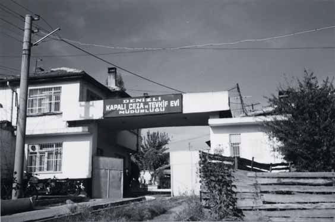
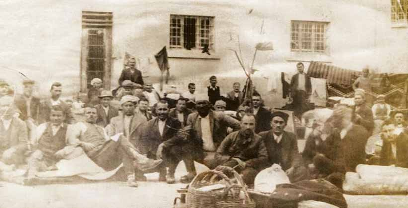
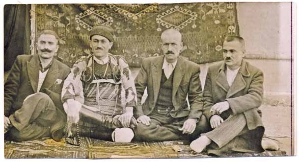
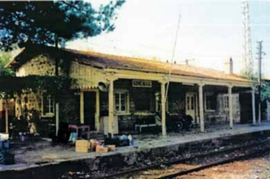

|
Denizli Hapsi |
  
|
|
Denizli Hapsi |
|
Denizli Hapsi

Çeþitli vilâyetlerden toplanan 126 kiþi ile beraber Bediüzzaman'da Isparta'ya getirildi.
Bir ay kadar sonra, Bediüzzaman ile talebeleri ikiþer ikiþer kelepçelenerek
bir trenin saman taþýmakta kullanýlan yük vagonuna týkýþtýrýlýp Denizli'ye gönderildiler.
Eskiþehir tutuklamalarýnda olduðu gibi, bu defa da Risale-i Nur talebelerinin arkasýndan terör estirilmiþ,
"Bunlar idama gidiyor" söylentisi yayýlmýþtý. Öyle ki, tutuklananlarýn çoluk çocuklarý sokaða çýkamaz olmuþ,
birçoðu da hastalýklara yakalanmýþtý.
Denizli Hapishanesi de söylentilerden nasibini almýþ; buradaki mahkûmlara da "Bunlar toplu isyan çýkaracaklar" denerek
Nur talebelerinden uzak durmalarý telkin edilmiþti. Denizli'ye getirilen 126 kiþiden 73'ü tutuklandý.

Denizli hapsinden kalma sararmýþ bir fotoðraf.
En arkada, kapý önünde görülen sarýklý zat, Mehmet Feyzi Efendi.
En önde, sepetlerin yanýndakilerden soldaki Salâhaddin Çelebi, onun yanýnda Süleyman Hünkâr.

Hapishane hatýrasý:
Dursun Atmaca, Süleyman Hünkâr (Sadýk Beyin efe kýyafetini giymiþ), Taþköprülü Sadýk Bey ve Mümtaz Acar.
Diðer üçü, Sadýk Bey vasýtasýyla Risale-i Nura talebe oldular.

Hasan Feyzi'nin Üstadý Denizli'den ayrýlýrken uðurladýðý Goncalý Tren Ýstasyonu.